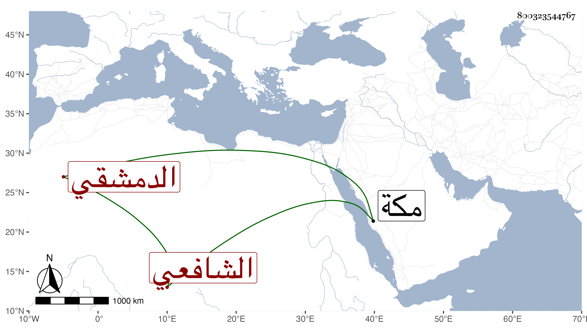

0902Sakhawi.DawLamic.ITO20230111-ara1.EIS1600.800323544767
Biography ID: 800323544767
254
أحمد بن محمد بن أحمد بن محمد بن أيوب الكمال أبو البقاء بن الشيخ المحب أبي الفضل الدمشقي الشافعي الآتي أبوه ويعرف كهو بابن الإمام ، ولما جاز التمييز عرض علي منظومة أبيه في العقائد المسماة تحفة العباد بما يجب عليهم في الإعتقاد ، وسمع مني المسلسل في ربيع الأول سنة ثلاث وتسعين بمكة ثم بعد تحفة الأحباب بقواعد الفرائض والحساب لأبيه أيضا ، سمع مني وعلي مع أبيه غير ذلك كختم البخاري مع النصف الأول من مؤلفي في ختمه وختم مسلم وأبي داود والترمذي مع مؤلفاتي في ختم كل منها وختم الشفا مع النصف الأول من مؤلفي في ختمه والمسلسل بيوم العيد بعد فراغ الإمام من الصلاة وشروعه في خطبة العيد وحديث زهير العشاري وكتبت له إجازة في كراسة فيها تعظيم زائد لأبيه ، وهو فطن لبيب قد شرع أبوه في تصنيف كتاب في الأحكام لأجله وربما كان يراجعني فيه .
